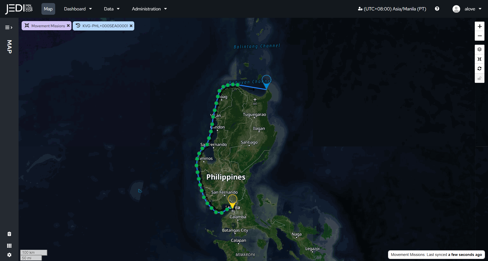

See teams that use JEDI-X to make hundreds of decisions every day.
Ran JEDI-X to lock down NATO collaborative planning across force prep, deployment, and integration.
Ran JEDI-X to move maintenance data to the Army's calibration lab — no manual handoff, no delay.
Ran JEDI-X to feed deployed logistics status directly into the Division Recognized Logistics Picture.
Ran JEDI-X to fuse Army, Marine Corps, and DLA data and sharpen M1 Abrams readiness reporting.
JEDI MNLOGCOP has been operational within the US DoD since 2018, and the footprint keeps expanding.

Team JEDI's data work isn't limited to moving forces around a theater — it extends into acquisition and equipment life-cycle management, including a named application on the F-35 program.
The F-35's F135 engine program has a data problem: sustainment information is scattered across services and OEMs, each running its own disconnected system — Solumina and ALIS for the Navy and Marine Corps, ODIN and JEDMICS for the Air Force, separate SAP instances for Pratt & Whitney and Rolls-Royce. Historically that's meant OEMs harvesting data from the government only to sell it back to the government later, and depots re-entering the same information by hand across every system in the chain
JEDI-FIRES applies the same JEDI-X data-centric model to this problem: enter maintenance data once, and every downstream system — government or contractor — can reuse it. At Fleet Readiness Center Southeast, examiners were losing an additional 30 minutes per Power Module Work Order to swivel-chair re-entry alone — roughly 4 hours across the 1,000-plus parts in a single Power Module certification. The solution is built to extend to any depot, any product line, any nation, any OEM.
Every hour spent on manual data entry is an hour your decision makers don't have. Get JEDI deployed.
Get in touch →